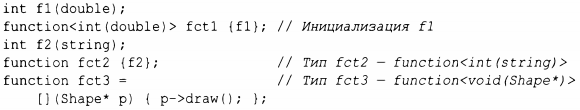

⇐13.8.2 mem_fn() 13.9 Функции типов⇒
Тип стандартной библиотеки function представляет собой тип, который может хранить любой объект, могущий быть вызванным с помощью оператора вызова (), т.е. объект типа function является функциональным объектом (§6.3.2). Например:
В случае fct2 я позволил типу function быть выведенным из инициализатора: int (string).
Очевидно, что шаблоны function полезны для обратных вызовов, для передачи операций в качестве аргументов, для передачи функциональных объектов и т.д. Однако это может привести к некоторым накладным расходам времени выполнения по сравнению с прямыми вызовами, а кроме того, function, будучи объектом, не участвует в перегрузке. Если вам нужно перегрузить функциональные объекты (включая лямбда-выражения), подумайте о применении ove r loaded (§ 13.5.1 ).